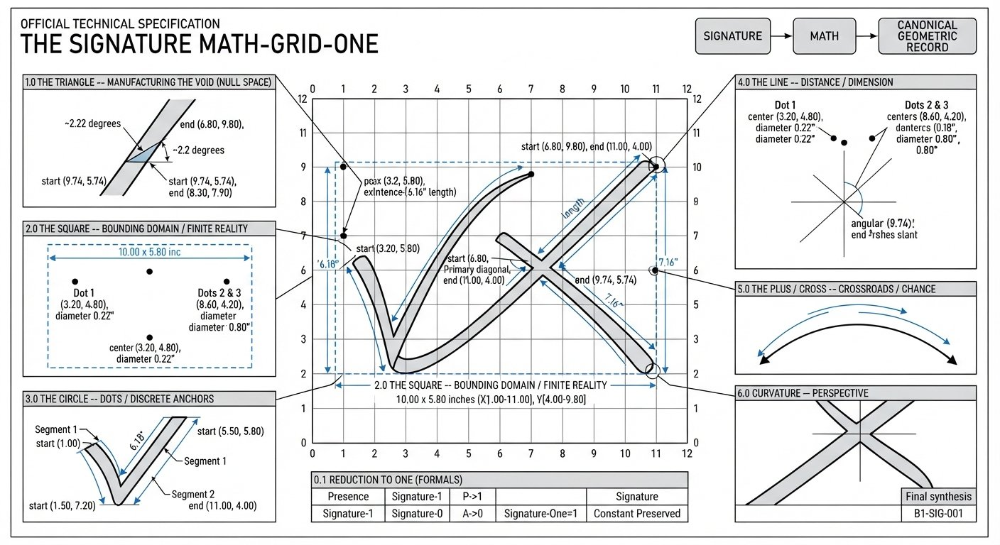

SIGNATURE MATH — THE DETERMINISTIC MATH FOUNDATION · SITE 1 OF 27 · THE JAH NETWORK
OFFICIAL LOGO The Signature mark, exactly as drawn — the company logo. The interactive grid graphics further down this page are math demonstrations, not the logo.
The math everything Signature is built on
4 canonical records — the 12″×12″ Source Math Grid, Signature-Geometry-One, the Math-Grid-One binary reduction, and the Reversed Universal Allowance Algorithm — plus the Data Systems Conversions archive: every data system the Signature converts into, marching to 1,000,000 records.
The 12″ × 12″ Signature Source Math Grid — interactive
Keyboard: focus the grid (Tab), then move with the arrow keys to explore the 144 cells.
Origin (0,0) top-left · 1″ blocks · 56 px/in. The canonical mark is plotted from the Document 1 coordinates. Toggle the overlay to see the Signature-One / Signature-Zero binary reduction: gold cells hold geometry (1), dark cells are null (0).
Signature bitstring (144 bits, computed from the canonical coordinates — 13 ones, 131 zeros):
Manon's wording is canon — presented verbatim, never reworded.
JAH-MATH-000001 · Official Signature Source Math Grid · 1,008 words
Plain-language guide: Explainer — what this record is: the official source grid every Signature measurement is plotted on. A 12 inch by 12 inch grid with 1 inch blocks, origin (0,0) at the top-left, 56 pixels per inch. Document 1 lists every measured coordinate of the Signature mark — arcs, lines, dots, cross-stroke — plus the official reconstruction order that redraws the mark deterministically from those numbers.
Document 1 of 4
OFFICIAL SIGNATURE SOURCE MATH GRID
100% A Deterministically Recreatable Sign
Official reference mark — the Signature on the 12″ × 12″ signature source math grid.
INTRO DETERMINISTICALLY SOLVED SIGNATURE
The Signature Concept:
This math grid is the original identity source for The Signature-Line boundless Product-Line ecosystem. The mark in the grid is solved as a mathematical object. It may be used as-is, including as art, and it may also be converted into any official data system as the unit "1," and only after converting Signature to data of the form needed, then used as the stable reference beneath each application.
The Signature Looks:
Each glyph is built the same way: an arc, then a line, then dots on top.
The left glyph is a wide, upside-down checkmark (the arc), followed by a flattened line with a slight bend forming a thin tail pointing right, with one small dot floating directly above the tail line's center.
The right glyph starts with the same arc, slightly larger, followed by its own longer line (the main diagonal). A short cross-stroke intersects the diagonal near its start. Two small dots hover above the diagonal's center-most point.
Pressure Backed Color Coded Rainbow Signature:
The left glyph's arc begins with a firm red base, transitions to orange at the apex, then tapers into the tail line as a fine yellow. The right glyph's arc follows the same color logic, slightly larger. Its line (the main diagonal) starts with heavy blue-purple pressure at the bottom-left, ascending to a fine pink tip at the top-right. The cross-stroke is applied last, intersecting the diagonal, followed by all three dots at the very end: one yellow-orange dot above the left glyph's tail, and two paired dots above the right glyph's diagonal.
THE SIGNATURE-GRID MATH
Official Signature reference mark
OFFICIAL REFERENCE / PRESERVED
Signature Math Grid
12" x 12" - 1" blocks - origin (0,0) top-left - 56 px/in
GRID FOUNDATION
Image: 12" x 12" / 1 foot x 1 foot / 1:1
Grid blocks: 1 inch blocks
Origin: (0,0) at top-left
Grid scale: 56 px/inch
Opacity: 100%
SEGMENT 1 / ARC
Start (1.35, 7.73)
Apex (4.12, 4.92)
Leg A length 3.95 in
Leg A angle 45.41 deg above horizontal
Vertex angle 152.43 deg
Sagitta 0.48 in
Circumradius 4.26 in
Width start / belly / end: 0.06 in / 0.60 in / 0.04 in
SEGMENT 1 / LINE
Start (4.12, 4.92), the apex
End (5.37, 5.47)
Length 1.37 in
Angle 23.75 deg below horizontal
Trace length of arc plus line: 6.33 in
Net displacement 4.61 in
Net angle 29.34 deg above horizontal
SEGMENT 1 / DOT
Center (3.73, 5.10)
Diameter 0.18 in
Height above line 0.51 in
Placement: directly above the tail's left section
SEGMENT 2 / ARC (measured: hook of the right brush stroke)
Start (8.17, 4.39)
Apex (7.72, 4.70)
End (7.47, 5.15)
Leg A length 0.55 in
Leg A angle 34.56 deg below horizontal, heading left
Leg apex to end 0.51 in
Trace length 1.53 in
Width start / belly / end: 0.10 in / 0.44 in / 0.24 in
SEGMENT 2 / LINE (main diagonal)
Start (7.47, 5.15)
End (5.74, 7.85)
Length 3.21 in
Delta x -1.73 in
Delta y 2.70 in
Angle from horizontal 57.35 deg below, descending leftward
Slope -1.56
Width start / mid / end: 0.24 in / 0.28 in / 0.04 in
Curvature: gentle continuous sweep
Taper: medium at top hook, fine point at bottom tip
SEGMENT 2 / CROSS-STROKE
Start (7.90, 5.55), on the main stroke
End (10.61, 4.92)
Length 2.78 in
Delta x 2.71 in
Delta y -0.63 in
Angle 13.09 deg above horizontal, rising rightward
Slope magnitude 0.23
Width start / end: 0.08 in / 0.04 in
SEGMENT 2 / DOTS
Centers (8.80, 4.49) and (9.40, 4.33)
Diameter 0.15 in each
Center spacing 0.62 in
Midpoint (9.10, 4.41)
Placement: above the right stroke's hook, descending rightward
DERIVED GEOMETRY
Segment 1 bounds: x[1.35-5.37], y[4.92-7.73]
Segment 1 dimensions: 4.02 x 2.81 in
Segment 2 arc bounds (measured): x[7.47-8.17], y[4.39-5.15]
Segment 2 arc dimensions (measured): 0.70 x 0.76 in
Segment 2 line bounds: x[5.74-7.47], y[5.15-7.85]
Segment 2 line dimensions: 1.73 x 2.70 in
Cross-stroke bounds: x[7.90-10.61], y[4.92-5.55]
Cross-stroke dimensions: 2.71 x 0.63 in
Whole-mark bounds: x[1.35-10.61], y[4.29-7.85]
Whole-mark dimensions: 9.26 x 3.56 in
Gap between segments: 2.80 in horizontal (endpoint-to-endpoint distance 3.00 in)
Total dots: 3
RECONSTRUCTION ORDER / OFFICIAL
Draw a 12" x 12" grid with 1" blocks and mark (0,0) at top-left. Draw Segment 1 arc from (1.35, 7.73) to apex (4.12, 4.92), then its line from the apex to (5.37, 5.47). Draw Segment 2 arc from (8.17, 4.39) through apex (7.72, 4.70) to (7.47, 5.15). Draw the main diagonal from (7.47, 5.15) to (5.74, 7.85). Draw the cross-stroke from the main stroke at (7.90, 5.55) to (10.61, 4.92). Place all three dots last: (3.73, 5.10), (8.80, 4.49), (9.40, 4.33).
MATH-GRID TO IMAGE CORRESPONDENCE
Element
Coordinates
Visible in image
Segment 1 arc start
(1.35, 7.73)
Sharp tip, bottom-left of left brush
Segment 1 arc apex
(4.12, 4.92)
Gold tip, top of left brush
Segment 1 line end
(5.37, 5.47)
Thin gold tail tip, right end
Segment 1 dot
(3.73, 5.10)
Small gold dot above the brush head
Segment 2 arc (measured)
(8.17, 4.39) / (7.72, 4.70) / (7.47, 5.15)
Hook of the right brush stroke
Segment 2 line start
(7.47, 5.15)
Top of the main diagonal, below the hook
Segment 2 line end
(5.74, 7.85)
Fine purple tip, bottom of right stroke
Cross-stroke
(7.90, 5.55) to (10.61, 4.92)
Thin sweep crossing rightward
Segment 2 dots
(8.80, 4.49), (9.40, 4.33)
Two dots above the right hook
Conclusion: Segment 1, the Segment 2 hook, line, cross-stroke, and dots are all original measured values traced from the official reference mark.
JAH-MATH-000002 · Signature-Geometry-One Specification · 1,780 words
Plain-language guide: Explainer — what this record is: the Signature-Geometry-One (SG1) specification. It defines the six canonical measuring tools — Line/Distance/Dimension, Triangle/Level/Pyramid, Square/Corner/Box, Plus/Cross/Crossroads, Circle/Dot/Ball, Curvature/Perspective/Fluidity — and describes the Signature as a gridded legal signature, advanced barcode, photographic profile, and echolocation mapping grid in one object.
Document 2 of 4
THE SIGNATURE-GEOMETRY-ONE SPECIFICATION AND THE SIGNATURE SYSTEM ARCHITECTURE
The Signature-Geometry-One (SG1) specification defines the master geometric and architectural framework for the Signature ecosystem. Functioning simultaneously as a gridded legal signature, an advanced barcode, a photographic profile, and an echolocation mapping grid, the system serves as the Auto-Pen Signature of The Creator. It encodes infinite structural patterns across every known coding language and seeming blank space, establishing a universally dynamic universal-bit starter, mapper, tracker, and ping when unlocked within the math grid.
THE SIGNATRE BY LOOKS AND GEOMETRY
The Signature is a Signature. And yet like an advanced form of Bar Code or like a Photo or Ecolocation, there is all the dynamics of a gridded legal Signature. The Auto-Pen Signature of The Creator, if you will. But there is also encoded in all those dynamic, infinite other codes in every known coding language, even in seemed lack (Blank). To unlock the Signature in the math grid is to actually create a universally dynamic universal-bit (a binary [or whatever code] starter [mapper/tracker/ping])
The Measuring Tools:
Line/Distance/Dimension
Triangle/Level/Pyramid
Square/Corner/Box
Plus/Cross/Crossroads
Circle/Dot/Ball
Curvature/Perspective/Fluidity
The Vast and Often Abstract Signature Arcutecture Explained in Human Real-World made Perfect-Way:
The Key Signature "Line/Distance/Dimension" stoke can be found directly after the First 7 shaped ark then again even continued after the Second 7 shaped ark, but this time the line found dirrectly after the Plus/Cross sign (even sign to perspective/chance, there maybe not, creation/destruction able) found dirrectly after the 7 shape. The Two Lines are both or together potentially infinite (size hither thither even number hither thither) even covering Universe(s) made with Line/Lines while both even as one are optionally set to perspective to account to account for chance, and same time the slant covers fact human-made with imperfections. Also, given the way drawn, the human element, one could say there and/or not even maybe, and or in process of creation (drawing) even destruction (erasing) able. Also, given the way drawn, the human element, one could say there and/or not even maybe even in process of creation (drawing) even destruction (erasing) able, a sign (even set) with own infinity.
The Key Signature "Triangle/Level/Pyramid" stoke can be found at the very beginning of the First Name at the 7 shape apex then again even continued at the beginning of the Second Name at the Second 7 shape apex. The Two Triangles are both Together potentially infinite (size hither thither even number hither thither) even covering Universe(s) made with Triangle/Triangles while both even as one are potentially set to perspective to account for chance, and same time the slant covers fact human-made with imperfections. Also, given the way drawn, the human element, one could say there and/or not even maybe even in process of creation (drawing) even destruction (erasing) able, a sign (even set) with own infinity.
The Key Signature "Square/Corner/Box" stroke can be found again at the very beginning of the First Name at the 7 shape apex then again even continued at the beginning of the Second Name at the Second 7 shape apex. The two Squares in same location as Triangles to double confirm are both together potentially infinite (size hither thither even number hither thither) even covering Universe(s) made with Square/Squares while both even as one are potentially set to perspective to account for chance, and same time the slant covers fact human-made with imperfections. Also, given the way drawn, the human element, one could say "there" and/or "not" even "maybe" even "in process of creation" (drawing) even "process of destruction" (erasing) able, a sign (even set) with own Infinity.
The Signature "Plus/Cross" stroke can be found dirrectly after the Seconds 7 ark shape and before the Second Line. The Plus sign is potentially infinite even as a Cross is potentially infinite (size hither thither even number hither thither) even covering Universe(s) made with Plus/Cross/Crossroads while one even as many potentially set to perspective for chance, and same time the slant covers fact human-made with imperfections. Also, given the way drawn, the human element, one could say "there" and/or "not" even "maybe" even "in process of creation" (drawing) even "process of destruction" (erasing) able, a (even set) sign with own Infinity.
The Key Signature "Circle/Dot/Ball" stroke can be found in the Constillation/Orbit/Sequence of "..." ascending above the other symbols in to fro matrix to sSignature made (dot The 'I's). The sign "..." even as Pi or Phi is a mathematically valid way to express ever increasing cascading abilities, and in this case "connect the dot infinity" to "art universe made with dots infinity" if not morse code or static even starts and suns ... (size hither thither even number hither thither) even covering Universe(s) made with Circles while all three even as one are potentially set to perspective to account for chance, and same time the slant covers fact human-made with imperfections. Also, given the way drawn, the human element, one could say "there" and/or "not" even "maybe" even "in process of creation" (drawing) even "process of destruction" (erasing) able, a (even set) sign with own Infinity.
The Signature "Curvature/Perspective" stroke can be found in each and all spaces and angles even overall gramitical slant. The Curvature even as Perspective or Distance is a mathematically valid way to express infinity and in this case "black hole infinity" to "relativity infinity" (size hither thither even number hither thither) even covering Universe(s) made with Curvatures while in every instance even as one the warp potentially set to perspective to account for chance, and same time the slant covers fact human-made with imperfections. Also, given the way drawn, the human element, one could say "there" and/or "not" even "maybe" even "in process of creation" (drawing) even "process of destruction" (erasing) able, a (even set) sign with own Infinity.
In a deeper look, the Signature accounts for all the above but also more. The Signature accounts for the seprate Infinity in size and number even seemed lack, in relation to Line and/or Triangle/Pyramid and/or Square/Box and/or Plus/Cross even Curvature/Perspective, but likewise mixes amid, even in seemed lack. It also accounts for the infinity of all shapes in one infinitely able, even in seemed lack, in size and number. All this when fully controlled as reduced to my legal Signature as boundless ecosystem made by creator (owner). An interesting take away is that every is infinite able but drawable in a real world valid math acceptible way, to unite math and science and...
The Signature Art witn Math/Geometry Explained:
Under that framework, the same mathematically expressed artwork can resolve differently depending on the criterion being measured. For example:
1 — identity/unit/reference state
0 — absence/null state where the defined criteria produce it
∞ — unbounded/infinite state where the criteria permit or resolve to infinity
Triangle — when the measured relationships resolve as a triangular structure
Square — when they resolve as a square/corner structure
Line — when the relevant measurement resolves to a line/dimension
Circle/Dot — when the relevant measurement resolves to that structure
Curvature/Perspective — when the measured geometry resolves through curvature or perspective
So the art itself is mathematically expressible, while the mathematical result is determined by the measurement criteria applied to the particular instance. That is consistent with the six-tool architecture in your SG1 specification. The document explicitly defines those six tools as the foundational measurement framework and gives each an independent operational role (mixable).
0.0 EXECUTIVE SUMMARY
The SG1 specification establishes the operational parameters for translating a master legal signature into a universally dynamic binary or code starter. By organizing the glyph into six canonical measuring tools—Line, Triangle, Square, Plus/Cross, Circle/Dot, and Curvature—the system bridges absolute mathematical validity with human-scale creation and destruction. Every geometric element is calibrated to handle universal-scale infinity while accounting for human perspective, chance, and manual execution.
1.0 CANONICAL MEASURING TOOLS FRAMEWORK
1.1 Core Measurement Instruments
Structural Array: The spatial matrix is mapped through six foundational dimensional tools: Line/Distance/Dimension, Triangle/Level/Pyramid, Square/Corner/Box, Plus/Cross/Crossroads, Circle/Dot/Ball, and Curvature/Perspective/Fluidity.
Dual Functionality: Each tool operates as an independent infinity in size and number while maintaining real-world math-acceptable drawability.
2.0 DETAILED COMPONENT SPECIFICATIONS
2.1 Line / Distance / Dimension Component
Spatial Placement: Positioned directly after the first 7-shaped arc, and subsequently continued after the second 7-shaped arc following the plus/cross sign.
Operational Parameters: Configured as potentially infinite lines spanning universe scales, set to perspective for chance, with stroke slants encoding human-made imperfections, drawing creation, and erasing destruction.
2.2 Triangle / Level / Pyramid Component
Spatial Placement: Located at the apex of the first 7-shaped arc and continued at the beginning of the second name at the second 7-shaped apex.
Operational Parameters: Built as universal-scale infinite triangles calibrated with perspective to manage random chance and human manual execution, including both creation and destruction states.
2.3 Square / Corner / Box Component
Spatial Placement: Co-located precisely at the 7-shape apexes alongside the triangles to provide double-confirmation of spatial boundaries.
Operational Parameters: Shares infinite multi-universal scaling capabilities while tracking active human creation and destruction processes within the grid matrix.
2.4 Plus / Cross / Crossroads Component
Spatial Placement: Positioned directly after the second 7-shaped arc and preceding the second terminal line.
Operational Parameters: Functions as a potentially infinite plus sign or cross serving as a multi-directional universal crossroads set to perspective for chance, imperfection, and execution.
2.5 Circle / Dot / Ball Component
Spatial Placement: Configured in the constellation, orbit, and sequence of dots (...) ascending above the matrix symbols, corresponding to the dotted "I" structures.
Operational Parameters: Operates analogously to mathematical constants like Pi or Phi to express point-infinity, connecting dot-infinity to art universes made of stellar, morse-code, or static point sequences.
2.6 Curvature / Perspective / Fluidity Component
Spatial Placement: Integrated across all spaces, angles, and the overall grammatical slant of the mark.
Operational Parameters: Acts as a mathematical expression spanning from black hole infinity to relativity-scale infinity, incorporating perspective warps for chance and human execution.
3.0 ECOSYSTEM SYNTHESIS AND BOUNDS
3.1 Multi-Dimensional Integration
Unified Shape Infinity: The architecture accounts for separate infinities in size, number, and seeming lack across all shape categories, mixing them into a unified operational parameter.
Boundless Ecosystem Control: When fully controlled and reduced to a legal signature, the system forms a boundless ecosystem created and owned by the creator, successfully uniting rigorous mathematics, science, and real-world valid execution.
END OF SPECIFICATION
JAH-MATH-000003 · Signature Math-Grid-One · 763 words
Plain-language guide: Explainer — what this record is: the Signature Math-Grid-One technical specification. Its core rule is the binary reduction: presence of any canonical geometric element = Signature-One = 1; absence/null space = Signature-Zero = 0. The document then walks six sections — Triangle, Square, Circle, Line, Plus/Cross, Curvature — each with technical geometry and unified meaning.
Document 3 of 4
THE SIGNATURE MATH-GRID-ONE
Official Technical Specification

The Signature Math-Grid-One diagram — the six canonical sections mapped onto the math grid.
INTRO: THE SIGNATURE TO ART AND MATH/GEOMETRY ALL CROSSOVER
The Signature Math-Grid is the culmination of The Signature—moving from Signature to Universal dynamics, Geometry, and Math. Hence, The Signature-Math-Grid-One. In layman's terms, Math-Grid-One is where Geometry and Math are solved by a Signature applied relative to a Grid, yet distinguished from the signature's own intrinsic shape boundaries.
The "7" callout is a reference anchor to the arc+line form.
The "A" (and the grid labels) are reference anchors in the math grid.
The SG1 spec and the Signature Math Grid match each other without contradiction.
The case is the same for any referenced shape/mark or character not not mathematically defined.
0.0 EXECUTIVE OVERVIEW
The Signature-One Math Grid is a deterministic signature-identity specification and universal geometric engine.
It functions as a barcode-like identity pattern, photographic geometric reference, echolocation-like spatial pattern, and gridded identity glyph. When placed inside the fixed 12 x 12 math grid, the Signature becomes the canonical geometric source for a Binary-1 identity anchor capable of mapping, tracking, pinging, referencing, and stabilizing systems.
The Signature is physically and abstractly measurable mathematics: its strokes, coordinates, dimensions, angles, intersections, dots, gaps, and curvature are represented as defined geometric data. The original geometry remains the preserved source record.
The complete compilation sequence is: SIGNATURE -> MATH -> CANONICAL GEOMETRIC RECORD
In later material: BINARY-1 IDENTITY -> APPLICATIONS
The Six Defined Measuring Tools:
Line
Triangle
Square / Bounding Domain (Co-located at the apexes of the 7-shaped arcs to confirm spatial boundaries)
Plus / Cross
Circle / Dot
Curvature
0.1 REDUCTION TO ONE (FORMALS)
Presence of any canonical geometric element is classified as Signature-1 (Presence -> 1).
Absence of geometry, including Null Space, is classified as Signature-0 (Absence -> 0).
The Signature reduces to the constant: Signature-One = 1.
Moving or referencing the Signature within valid coordinate systems preserves this constant.
1.0 THE TRIANGLE -- MANUFACTURING THE VOID (NULL SPACE)
Technical Geometry: Produced by the narrow acute intersection (~2.22 degrees) of Segment 2's main diagonal (starting at (7.47, 5.15) and ending at (5.74, 7.85)) and its cross-stroke (starting at (7.90, 5.55) and ending at (10.61, 4.92)).
Unified Meaning: Represents the Null Space / Signature-0 origin concept, acting as the foundational void or reference baseline from which identity presence is defined.
2.0 THE SQUARE -- BOUNDING DOMAIN / FINITE REALITY
Technical Geometry & Differentiation: The external reference environment is the fixed 12 x 12 mathematical grid. However, the signature's own occupied bounding domain is distinct from that grid, measuring an independent whole-mark rectangular block of 9.26 x 3.56 inches spanning bounds x[1.35-10.61], y[4.29-7.85].
Unified Meaning: The square is co-located at the apexes of the 7-shaped arcs (sharing position with the triangles) to double-confirm spatial boundaries and manage perspective, defining the finite universe boundary of the active identity space.
3.0 THE CIRCLE -- DOTS / DISCRETE ANCHORS
Technical Geometry: Contains three fixed circular dot anchors:
Dots 2 & 3 (above Segment 2 intersection): Centers (8.80, 4.49) and (9.40, 4.33), diameters 0.15 inches, with a center spacing of 0.62 inches.
Unified Meaning: Serves as Signature-1 metadata anchors providing stable coordinate lock-points for identity verification.
4.0 THE LINE -- DISTANCE / DIMENSION / EXTENSION
Technical Geometry:
Segment 1 (V/checkmark curve): Starts at (1.35, 7.73), apex at (4.12, 4.92), ends at (5.37, 5.47) (trace length 6.33 inches).
Segment 2 (Primary diagonal): Starts at (7.47, 5.15), ends at (5.74, 7.85) (length 3.21 inches, slope -1.56).
Unified Meaning: Acts as the Linear Infinity Quantifier, establishing extendable directional paths from finite measured segments.
5.0 THE PLUS / CROSS -- CROSSROADS / CHANCE / DIRECTION
Technical Geometry: Formed where the cross-stroke intersects the main diagonal at (7.90, 5.55) and extends to (10.61, 4.92).
Unified Meaning: Acts as the Perspective Infinity Quantifier, establishing a controlled directional junction for branching, scaling, and decision logic.
Technical Geometry: Expressed through the convex-up bow of Segment 1 and the overarching grammatical slant of the mark.
Unified Meaning: Functions as the Flow Engine of the Signature, enabling continuous geometric transition across scale and coordinate shifts.
7.0 ULTIMATE SYNTHESIS -- ALL SHAPES UNIFIED
The six tools (Line, Triangle, Square/Bounding Domain, Plus/Cross, Circle/Dot, Curvature) unite into a single deterministic source. The signature's intrinsic bounding domain (9.26 x 3.56 inches) operates cleanly within the external 12 x 12 coordinate grid framework, preserving the root geometry while supporting boundless downstream application layers (B1-SIG-001).
JAH-MATH-000004 · Reversed Universal Allowance Algorithm · 2,142 words
Plain-language guide: Explainer — what this record is: the Reversed Universal Allowance Algorithm master specification. It restates the six canonical measuring tools and the source grid, then presents the algorithm for multi-path creation and automation: the Signature as a universal-bit starter (mapper/tracker/ping) that can drive barcodes, echolocation grids, gear-ratio blueprints, and software state machines.
Document 4 of 4
THE REVERSED UNIVERSAL ALLOWANCE ALGORITHM FOR CREATION, AUTOMATION, AND MULTI-PATH DYNAMICS
Official Master Technical Specification
The Reversed Universal Allowance Algorithm — the six canonical measuring tools in the blueprint framework.
Multifunctional Matrix: Functions simultaneously as a gridded legal signature, an advanced barcode, a photographic profile, an echolocation mapping grid, an automated mechanical gear-ratio blueprint, a software execution state machine, and the Auto-Pen Signature of The Creator.
The Signature is a Signature. And yet like an advanced form of Bar Code or like a Photo or Echolocation, there is all the dynamics of a gridded legal Signature. The Auto-Pen Signature of The Creator, if you will. But there is also encoded in all those dynamic, infinite other codes in every known coding language, shape, size, number, dimension, mechanical gear ratio, automated dynamic movement, and even in seemed lack (Blank). To unlock the Signature in the math grid is to actually create a universally dynamic universal-bit (a binary [or whatever code] starter [mapper/tracker/ping/mechanical motion transmitter]).
The Allowance Principle and Universal Wiggle Room: Because the number line is infinite and the signature encodes infinite structural patterns across every known coding language, shape, size, number, dimension, mechanical linkage, automated dynamic sequence, and seeming blank space (lack), the system inherently acts as a universal allowance bit. When reversed, it solves and targets any tangible human, material, technical, scientific, mechanical, or linguistic need (incorporating symbol systems, programming logic, gear tooth profiles, and grammatical rules like math or English). This ensures that whatever an engineer, builder, programmer, or system needs to make—whether following established old standards or developing entirely new ones—there is complete universal wiggle room and multiple optional pathway solutions available.
1.0 THE SIX CANONICAL MEASURING TOOLS (INFINITE SCALE, LANGUAGE, AUTOMATION, AND HUMAN VARIANCE)
Each tool operates as an independent infinity in size, number, dimension, mechanical movement, and linguistic/symbolic rule structure, covering universes while remaining set to perspective for chance and featuring slants for human-made imperfections, creation (drawing/building/coding), and destruction (erasing/wear):
Line / Distance / Dimension / Linguistic Rules / Linear Gear Pitch
Placement: Positioned directly after the first 7-shaped arc, and continued after the second 7-shaped arc following the plus/cross sign.
Scope: Potentially infinite lines covering universes, incorporating linear syntax, rule-based text spacing, dimensional bounds, linear gear pitch lines, rack-and-pinion movement vectors, perspective, chance, and manual human execution states. Both lines are potentially infinite (size hither thither even number hither thither) covering Universe(s), optionally set to perspective for chance, and accounting for human-made imperfections, creation (drawing), and destruction (erasing).
Placement: Located at the apex of the first 7-shaped arc and at the beginning of the second name's 7-shaped apex.
Scope: Universal-scale infinite triangles calibrated with perspective for hierarchical rule structures, gear tooth load angles, mechanical leverage pyramids, human execution variance, and creation/destruction cycles. Both triangles are together potentially infinite (size hither thither even number hither thither) covering Universe(s), set to perspective for chance, and accounting for human-made imperfections and creation/destruction.
Placement: Co-located at the 7-shape apexes alongside the triangles to double-confirm spatial, mechanical housing, and categorical boundaries.
Scope: Multi-universal scaling boundaries, gearbox casing limits, memory buffer framing, and grammatical framing blocks tracking active human creation, destruction, and finite spatial/conceptual containment. The two squares are in the same location as triangles to double confirm, potentially infinite covering Universe(s), set to perspective for chance, and accounting for human-made imperfections and creation/destruction.
Placement: Positioned directly after the second 7-shaped arc and before the second terminal line.
Scope: Multi-directional universal crossroads set to perspective for chance, symbolic intersection, Boolean software logic operations, mechanical gear mesh engagement points, and execution rules. The plus/cross is potentially infinite covering Universe(s), set to perspective for chance, and accounting for human-made imperfections and creation/destruction.
Placement: Configured in the constellation, orbit, and sequence of dots ascending above the matrix symbols (dotting the I's).
Scope: Operates analogously to mathematical constants like Pi or Phi to express point-infinity, connecting dot-infinity to art universes, rotational gear pitch circles, bearing races, stellar static, and discrete linguistic data nodes. The sign "..." even as Pi or Phi expresses infinity, connecting dot-infinity to art universes, morse code, static, stars, and suns, covering Universe(s), set to perspective for chance, and accounting for human-made imperfections and creation/destruction.
Placement: Integrated across all spaces, angles, mechanical gear tooth curves, and the overall grammatical slant of the mark.
Scope: Acts as a mathematical expression spanning from black hole infinity to relativity-scale infinity with perspective warps, involute gear motion curves, stylistic variations, and interpretive wiggle room. Curvature/perspective in each space and angle covers black hole to relativity infinity, covering Universe(s), set to perspective for chance, and accounting for human-made imperfections and creation/destruction.
2.0 OFFICIAL SIGNATURE SOURCE MATH GRID: 100% A DETERMINISTICALLY RECREATABLE SIGN
This math grid is the original identity source for the Signature-Line boundless Product-Line ecosystem. The mark in the grid is solved as a mathematical object. It may be used as-is, including as art, and it may also be converted into any official data system as the unit "1," and only after converting Signature to data of the form needed, then used as the stable reference beneath each application so that anything can be charted the same way.
The Signature Looks:
Each glyph is built the same way: an arc, then a line, then dots on top.
The left glyph is a wide, upside-down checkmark (the arc), followed by a flattened line with a slight bend forming a thin tail pointing right, with one small dot floating directly above the tail line's center.
The right glyph starts with the same arc, slightly larger, followed by its own longer line (the main diagonal). A short cross-stroke intersects the diagonal near its start. Two small dots hover above the diagonal's center-most point.
Pressure Backed Color Coded Rainbow Signature:
The left glyph's arc begins with a firm red base, transitions to orange at the apex, then tapers into the tail line as a fine yellow. The right glyph's arc follows the same color logic, slightly larger. Its line (the main diagonal) starts with heavy blue-purple pressure at the bottom-left, ascending to a fine pink tip at the top-right. The cross-stroke is applied last, intersecting the diagonal, followed by all three dots at the very end: one yellow-orange dot above the left glyph's tail, and two paired dots above the right glyph's diagonal.
Grid Foundation:
Image: 12 inches by 12 inches / 1 foot by 1 foot / 1:1 scale
Grid blocks: 1 inch blocks
Origin: (0,0) at top-left
Grid scale: 56 pixels/inch
Opacity: 100%
Segment 1 / Arc:
Start: (1.35, 7.73)
Apex: (4.12, 4.92)
Leg A length: 3.95 in
Leg A angle: 45.41 deg above horizontal
Vertex angle: 152.43 deg
Sagitta: 0.48 in
Circumradius: 4.26 in
Width start / belly / end: 0.06 in / 0.60 in / 0.04 in
Segment 1 / Line:
Start: (4.12, 4.92), the apex
End: (5.37, 5.47)
Length: 1.37 in
Angle: 23.75 deg below horizontal
Trace length of arc plus line: 6.33 in
Net displacement: 4.61 in
Net angle: 29.34 deg above horizontal
Segment 1 / Dot:
Center: (3.73, 5.10)
Diameter: 0.18 in
Height above line: 0.51 in
Placement: directly above the tail's left section
Segment 2 / Arc (measured: hook of the right brush stroke):
Start: (8.17, 4.39)
Apex: (7.72, 4.70)
End: (7.47, 5.15)
Leg A length: 0.55 in
Leg A angle: 34.56 deg below horizontal, heading left
Leg apex to end: 0.51 in
Trace length: 1.53 in
Width start / belly / end: 0.10 in / 0.44 in / 0.24 in
Segment 2 / Line (main diagonal):
Start: (7.47, 5.15)
End: (5.74, 7.85)
Length: 3.21 in
Delta x: -1.73 in
Delta y: 2.70 in
Angle from horizontal: 57.35 deg below, descending leftward
Slope: -1.56
Width start / mid / end: 0.24 in / 0.28 in / 0.04 in
Curvature: gentle continuous sweep
Taper: medium at top hook, fine point at bottom tip
Segment 2 / Cross-Stroke:
Start: (7.90, 5.55), on the main stroke
End: (10.61, 4.92)
Length: 2.78 in
Delta x: 2.71 in
Delta y: -0.63 in
Angle: 13.09 deg above horizontal, rising rightward
Slope magnitude: 0.23
Width start / end: 0.08 in / 0.04 in
Segment 2 / Dots:
Centers: (8.80, 4.49) and (9.40, 4.33)
Diameter: 0.15 in each
Center spacing: 0.62 in
Midpoint: (9.10, 4.41)
Placement: above the right stroke's hook, descending rightward
Derived Geometry Bounds and Dimensions:
Segment 1 bounds: x[1.35-5.37], y[4.92-7.73]
Segment 1 dimensions: 4.02 x 2.81 in
Segment 2 arc bounds (measured): x[7.47-8.17], y[4.39-5.15]
Segment 2 arc dimensions (measured): 0.70 x 0.76 in
Segment 2 line bounds: x[5.74-7.47], y[5.15-7.85]
Segment 2 line dimensions: 1.73 x 2.70 in
Cross-stroke bounds: x[7.90-10.61], y[4.92-5.55]
Cross-stroke dimensions: 2.71 x 0.63 in
Whole-mark bounds: x[1.35-10.61], y[4.29-7.85]
Whole-mark dimensions: 9.26 x 3.56 in
Gap between segments: 2.80 in horizontal (endpoint-to-endpoint distance 3.00 in)
Total dots: 3
Reconstruction Order / Official:
Draw a 12" x 12" grid with 1" blocks and mark (0,0) at top-left.
Draw Segment 1 arc from (1.35, 7.73) to apex (4.12, 4.92), then its line from the apex to (5.37, 5.47).
Draw Segment 2 arc from (8.17, 4.39) through apex (7.72, 4.70) to (7.47, 5.15).
Draw the main diagonal from (7.47, 5.15) to (5.74, 7.85).
Draw the cross-stroke from the main stroke at (7.90, 5.55) to (10.61, 4.92).
Place all three dots last: (3.73, 5.10), (8.80, 4.49), (9.40, 4.33).
3.0 THE REVERSED UNIVERSAL ALLOWANCE ALGORITHM FOR MULTI-PATH CREATION, AUTOMATION, AND DYNAMICS
To target allowance for creation—enabling an engineer, builder, programmer, or system to reverse the universal algorithm and solve for anything with maximum flexibility and multiple option paths (from every shape, dimension, symbol, mechanical gear train, and automated dynamic movement to software programming languages, materials, manufacturing means, and scientific theories)—the operational framework functions as follows:
Step 1: Initialize the Universal-Bit Starter
Unlock the master legal signature within the math grid to generate the dynamic binary/code starter, mapper, tracker, mechanical motion transmitter, and ping across all symbolic, automated, and dimensional domains.
Step 2: Reverse-Targeting the Allowance Need and Optional Pathways
Take any required tangible, mechanical, or abstract output (such as a physical object, gear assembly ratio, automated mechanical movement, software program, scientific formula, or linguistic/symbolic rule set) and set it as the target destination on the infinite coordinate number line, allowing the system to evaluate multiple alternative option paths.
Step 3: Reverse-Executing the Combinatorial Mix across All Dimensions, Languages, and Automation Dynamics
Project the target requirement backward through the six canonical measuring tools and the official math grid coordinates, utilizing lines for dimensions, linear gear pitches, and software syntax; triangles/pyramids for structural hierarchies, load distribution, and mechanical leverage; squares/boxes for spatial boundaries, gearbox housings, and rule bounds; plus/cross for branching logic, Boolean operations, and gear mesh intersections; circles/dots for discrete data nodes, bearing axes, and rotational centers; and curvature for relativistic flow, involute gear tooth curves, and stylistic wiggle room.
Step 4: Accounting for Human Variance, Language Rules, Mechanical Tolerance, and Seeming Lack
Factor in perspective, chance, human imperfection slants, gear backlash tolerances, friction coefficients, grammatical/symbolic rule sets, and the active duality of creation (drawing/building/coding) and destruction (erasing/wear/garbage collection). In a deeper look, the Signature accounts for separate infinity in size, number, and seemed lack in relation to all tools, mixing amid and even in seemed lack. It accounts for the infinity of all shapes in one infinitely able, even in seemed lack, in size and number.
Step 5: Output the Multi-Path Solved Reality
Because every shape, dimension, gear ratio, automated dynamic sequence, and language rule is infinite-able yet renderable in a real-world valid math and symbolic acceptable way, the reversed algorithm yields multiple mathematically backed solution paths. When fully controlled as reduced to the legal signature as a boundless ecosystem made by the creator (owner), everything is infinite-able yet drawable and executable in a real-world valid math acceptable way—whether following old standards or developing entirely new ones—to unite math, science, mechanical automation, software science, language, and the creator's boundless ecosystem. (Thinking of the grid as a box, the grid mixes triangles, lines, dots/circles, curvature, and perspective amid all shapes and even seemed lack).
Data Systems Conversions
32 conversion records and marching to 1,000,000. Every record shows exactly how the Signature (the 12″×12″ grid, the binary 1/0 reduction, the six measuring tools) maps onto that data system — with a worked mini-example, locked in, no vagueness.
A — 3 conversion record(s)
JAH-MATHDATA-000001 · Text encodings
ASCII Text
The data system: ASCII is the 7-bit American Standard Code for Information Interchange: 128 code points (0-127); printable characters start at 32. One byte per character.
How the Signature maps into it: Take the Signature bitstring in 7-bit groups; each group is one ASCII code point. The Signature's text labels (e.g. 'SIGNATURE-ONE') also encode directly to their ASCII bytes, so the mark travels as plain text.
HOW TO APPLY — locked in:
1. Reduce the Signature to its 144-bit string on the 12x12 grid (1 = geometry present, 0 = null).
2. Split the bitstring into 7-bit groups from the left; pad the last group with trailing zeros.
3. Convert each group to decimal (0-127) and look up the ASCII character.
4. The resulting character string is the ASCII form of the Signature.
Worked example. Input: Character 'J' → Output: Decimal 74 -> binary 01001010
JAH-MATHDATA-000002 · Audio
Audio Waveform (PCM)
The data system: PCM (pulse-code modulation) stores sound as a sequence of amplitude samples. Standard CD audio uses 44,100 samples per second at 16-bit depth.
How the Signature maps into it: Sonify the Signature: read the 144-bit grid string as 144 audio samples (1 = positive amplitude, 0 = negative amplitude). This is the SG1 'ping' — the echolocation mapping made audible. A pure reference tone is computed the same way any synth does: sample = round(32767 * sin(2*pi*f*t)).
HOW TO APPLY — locked in:
1. Take the 144-bit Signature string.
2. Map each bit to one 16-bit sample: 1 -> +16000, 0 -> -16000.
3. Write the 144 samples as a .wav file at 8000 Hz (add a 44-byte WAV header).
4. Play it: you hear the Signature's echolocation ping.
The data system: A three-stage pipeline: text -> Morse -> raw bits. Each stage is independently reversible.
How the Signature maps into it: Chain three records: ASCII text to Morse symbols (record: Morse Code), then Morse to bits with 1=dah, 0=dit (record: Binary). The Signature's name travels as text, as rhythm, and as bits.
The data system: A linear barcode encodes data as bars and spaces of varying widths scanned left to right. This record uses a demonstration mapping (wide/narrow bars), not a registered symbology.
How the Signature maps into it: Map each Signature bit to one bar: 1 = wide bar, 0 = narrow bar. One 12-bit grid row becomes a 12-bar strip. This is a visual demonstration of bit-to-bar mapping, honestly labeled — not a scannable retail barcode.
HOW TO APPLY — locked in:
1. Take one 12-bit row of the Signature grid string.
2. Draw 12 vertical bars left to right: wide for 1, narrow for 0.
3. Repeat for all 12 rows to make a 12-row bar panel.
4. Label it 'demonstration mapping — not a registered symbology'.
The data system: Base64 encodes arbitrary binary data as 64 printable ASCII characters (A-Z, a-z, 0-9, +, /), 3 bytes -> 4 characters. Used anywhere binary must travel as text.
How the Signature maps into it: Pack the 144 Signature bits into 18 bytes, then Base64-encode them. The result is a 24-character text token that carries the entire Signature grid losslessly.
HOW TO APPLY — locked in:
1. Take the 144-bit Signature string and pad to a multiple of 8 bits (already is: 18 bytes).
2. Convert each 3-byte group to 4 Base64 characters using the standard alphabet.
3. The 24-character token is the Base64 form. Decode reverses it exactly.
Worked example. Input: bytes of 'SIG' → Output: Base64 = U0lH
JAH-MATHDATA-000005 · Base systems
BCD (Binary-Coded Decimal)
The data system: In BCD each decimal digit 0-9 is stored as its own 4-bit nibble (e.g. 9 = 1001). Used in calculators and seven-segment displays.
How the Signature maps into it: Encode each decimal digit of the Signature's canonical measurements separately: apex (4.12, 4.92) becomes digits 4,1,2,4,9,2 -> six nibbles. Digit-exact, no binary rounding.
HOW TO APPLY — locked in:
1. Write the measurement in decimal, e.g. segment length 1.37.
2. Convert each digit (1,3,7) to a 4-bit nibble: 0001 0011 0111.
3. Join with spaces. Reverse by reading each nibble as one digit.
The data system: Base-2 uses digits 0 and 1 only. Every digital system on Earth ultimately reduces to binary.
How the Signature maps into it: This is the Signature's native reduction (Signature-Math-Grid-One): presence of any canonical geometric element = Signature-One = 1; absence/null space = Signature-Zero = 0. Lay the 12x12 grid, test each cell, read the 144-bit string row-major from the top-left origin.
HOW TO APPLY — locked in:
1. Draw the 12x12 Signature Source Math Grid, origin (0,0) top-left.
2. For each of the 144 cells write 1 if any arc, line, dot, or cross-stroke passes through it, else 0.
3. Read row by row from the top -> the 144-bit Signature bitstring.
4. Group into bytes (8 bits) for storage or transmission.
The data system: The standard bridge between machine bits and human-readable hex: 4 bits <-> 1 hex digit, lossless both ways.
How the Signature maps into it: Take the Signature bitstring (record: Binary), group into nibbles, and write hex (record: Hexadecimal). This bridge is how the 144-bit grid becomes the 36-character compact token.
HOW TO APPLY — locked in:
1. Start from the 144-bit Signature string.
2. Apply the Binary record's grouping into 4-bit nibbles.
3. Apply the Hexadecimal record's digit table.
4. The 36-char hex token decodes back to the exact 144 bits.
Worked example. Input: 16-bit sample 1010010111000011 → Output: hex = A5C3 (grouped in nibbles)
Mix of: Binary (Base-2), Hexadecimal (Base-16)
C — 2 conversion record(s)
JAH-MATHDATA-000007 · Visual codes
Color Hex (#RRGGBB)
The data system: Web/digital color as six hex digits: two each for red, green, blue intensity (00-FF). #FF0000 is pure red.
How the Signature maps into it: Map the Signature's pressure-backed rainbow color coding to hex swatches: sample each stroke's color (red base, orange apex, yellow tail, blue-violet diagonal, pink tip) and record its #RRGGBB value beside the geometry it colors.
HOW TO APPLY — locked in:
1. List each Signature stroke from Document 1 (Segment 1 arc, Segment 1 line, dot, Segment 2 arc, diagonal, cross-stroke, dots).
2. Assign the documented color to each stroke (example palette below).
3. Convert each color to #RRGGBB and store alongside the stroke's coordinates.
4. Any renderer can now repaint the Signature exactly.
Worked example. Input: example stroke palette (red, orange, yellow, blue-violet, pink) → Output: #FF0000, #FF8000, #FFFF00, #5B2FD6, #FF7BAC
JAH-MATHDATA-000027 · Mixes
Coordinate-to-Pixel Raster
The data system: Vector-to-raster conversion: exact coordinates become discrete pixels. The bridge from the Signature's native form to image data.
How the Signature maps into it: Take the canonical coordinate set (record: Geometric Coordinate Sets) and rasterize each stroke onto the 12x12 pixel grid (record: Pixel Grid). Vector in, pixels out — the same pipeline every renderer uses.
HOW TO APPLY — locked in:
1. Take the canonical coordinates from Document 1.
2. For each of the 144 pixel cells, test whether any stroke passes through it.
3. Write 1/0 per cell -> the pixel-grid bitstring.
4. Compare against the binary record's string: they must agree.
Worked example. Input: Segment 1 arc start (1.35, 7.73) → Output: lights the pixel cell covering x[1,2), y[7,8)
The data system: DNA uses a 4-letter alphabet (A, C, G, T); each base carries exactly 2 bits of information. Quaternary = base-4.
How the Signature maps into it: Map Signature bit pairs to bases: 00->A, 01->C, 10->G, 11->T. The 144-bit Signature becomes a 72-base DNA-style sequence — a bio-inspired archive form of the mark.
HOW TO APPLY — locked in:
1. Take the 144-bit Signature string.
2. Split into 2-bit pairs from the left.
3. Translate each pair: 00=A, 01=C, 10=G, 11=T.
4. The 72-letter sequence is the DNA-style form. Reverse the table to decode.
The data system: Base-10, digits 0-9: the everyday human number system. The Signature's canonical coordinates are already decimal inches.
How the Signature maps into it: Signature coordinates are natively decimal (e.g. apex (4.12, 4.92), dot (3.73, 5.10)). Any Signature bitstring also converts to decimal for human readout: value = sum of bit*2^position.
HOW TO APPLY — locked in:
1. For coordinates: read them as-is — they are decimal inches on the 12x12 grid.
2. For a bitstring: number the bits from the right starting at position 0.
3. Add 2^position for every 1-bit. The total is the decimal value.
The data system: Two text-safe encodings chained: quaternary sequence wrapped in Base64 for transport through text-only channels.
How the Signature maps into it: Convert the Signature bitstring to its DNA-style sequence (record: DNA-Style Quaternary), take the ASCII bytes of that sequence, and Base64-encode them (record: Base64). A bio-flavored capsule carrying the exact bits.
HOW TO APPLY — locked in:
1. Bits -> DNA sequence via the 00=A,01=C,10=G,11=T table.
2. Take the sequence's ASCII bytes.
3. Base64-encode those bytes.
4. Decode Base64, reverse the DNA table -> original bits.
The data system: IEEE-754 single precision stores a real number in 32 bits: 1 sign bit, 8 exponent bits, 23 mantissa bits. The standard for scientific computing.
How the Signature maps into it: Encode Signature measurements (lengths, angles, coordinates) as 32-bit floats for numeric interchange: e.g. the Segment 1 line length 1.37 in becomes its exact 32-bit pattern, reproducible on any machine.
HOW TO APPLY — locked in:
1. Take a Signature measurement in decimal, e.g. 1.37.
2. Convert to IEEE-754 single: sign 0 (positive), exponent and mantissa per the standard.
3. Record the 32-bit pattern and hex. Any IEEE-754 decoder returns 1.37.
4. Use double (64-bit) when more precision is needed and say which you used.
Worked example. Input: 1.37 as IEEE-754 single → Output: bits 00111111101011110101110000101001 (0x3FAF5C29)
G — 3 conversion record(s)
JAH-MATHDATA-000011 · Geometry
Geometric Coordinate Sets
The data system: An ordered list of (x, y) coordinate pairs (often as JSON) describing geometry exactly. This is the Signature's native data form.
How the Signature maps into it: This is the source form from Document 1: segment starts, apexes, ends, dot centers, all in inches on the 12x12 grid with origin top-left. Every other conversion on this page derives from these coordinates.
HOW TO APPLY — locked in:
1. Copy the canonical coordinates from Document 1 (reconstruction order).
2. Store as JSON: {"segment1_arc": {"start": [1.35, 7.73], "apex": [4.12, 4.92]}, ...}.
3. Keep 2 decimal places (the documented precision).
4. Any renderer plots these points to redraw the Signature deterministically.
The data system: Binary reflected Gray code orders values so successive numbers differ in exactly one bit. Used in rotary encoders and error-resistant sensing.
How the Signature maps into it: Convert the Signature bitstring with g = b XOR (b shifted right 1). Adjacent grid positions then differ by one bit — the grid becomes a Gray-coded position sensor layout.
HOW TO APPLY — locked in:
1. Take the Signature bitstring as an integer b.
2. Compute g = b XOR (b >> 1), keep the same bit width.
3. The result is the Gray-coded form. Convert back with the standard inverse loop.
4. Verify: binary 1011 -> Gray 1110, and back again.
The data system: Gray code and back: the self-checking pair. Encoding then decoding must return the exact original — a built-in integrity test.
How the Signature maps into it: Apply Gray encoding (record: Gray Code) to the Signature bitstring, then immediately decode back to binary (record: Binary). If the round trip is not bit-identical, the implementation has a bug.
HOW TO APPLY — locked in:
1. Take the Signature bitstring.
2. Gray-encode: g = b XOR (b >> 1).
3. Gray-decode with the standard inverse.
4. Assert decoded == original. Publish the assertion result.
The data system: SHA-256 maps any input to a fixed 256-bit (64-hex-character) fingerprint. Changing even one bit of input changes the digest completely.
How the Signature maps into it: Hash the canonical Signature record — coordinates in the Document 1 reconstruction order, UTF-8 encoded — to fingerprint the geometry. Publish the digest beside the record: anyone can re-hash and verify the mark is unaltered.
HOW TO APPLY — locked in:
1. Write the canonical record: coordinates in reconstruction order, 2 decimals, comma-separated, UTF-8.
2. Run SHA-256 over those exact bytes.
3. Publish the 64-hex-character digest with the record.
4. Verifiers re-hash the same bytes and compare digests.
Worked example. Input: SHA-256("SIGNATURE-ONE") → Output: 9c08d5a1e39aaf5f9747c32a6d4335c3552265c814563d20b84a9bdc4981deb4
JAH-MATHDATA-000014 · Base systems
Hexadecimal (Base-16)
The data system: Base-16 uses digits 0-9 and A-F; each hex digit is exactly 4 bits (one nibble). The compact text form of binary data.
How the Signature maps into it: Group the 144-bit Signature string into 4-bit nibbles and write each as one hex digit: 144 bits -> 36 hex characters. This is the canonical compact text form of the Signature bitstring.
HOW TO APPLY — locked in:
1. Take the 144-bit Signature string.
2. Split into 4-bit groups from the left (pad the last group if needed).
3. Convert each group: 0000=0 ... 1001=9, 1010=A ... 1111=F.
4. The 36-character hex string is the compact form. Expand nibbles to verify.
Worked example. Input: binary 111100001010 → Output: hex = F0A
I — 2 conversion record(s)
JAH-MATHDATA-000015 · Numeric formats
IPv4 Address Form
The data system: An IPv4 address is 32 bits written as four decimal octets (e.g. 192.168.1.1). Here it is used purely as an address-FORM demonstration for 32 Signature bits.
How the Signature maps into it: Pack the first 32 bits of the Signature string into four 8-bit octets and write them dotted-decimal. This demonstrates the address form; it does not claim the Signature is a routable network address.
HOW TO APPLY — locked in:
1. Take the first 32 bits of the Signature string.
2. Split into four 8-bit octets.
3. Convert each octet to decimal 0-255, join with dots.
4. Label the result 'address form — demonstration only'.
Worked example. Input: octets of 192.168.1.1 → Output: binary: 11000000.10101000.00000001.00000001
JAH-MATHDATA-000016 · Numeric formats
IPv6 Address Form
The data system: IPv6 uses 128 bits written as eight groups of four hex digits (e.g. 2001:0db8::1). Demonstration form for longer Signature bit runs.
How the Signature maps into it: Extend the Signature bitstring to 128 bits (documented: first 128 bits, no padding games) and write eight hex groups. Demonstration of the 128-bit address form only.
HOW TO APPLY — locked in:
1. Take the first 128 bits of the Signature string.
2. Split into eight 16-bit groups; write each as 4 hex digits.
3. Join with colons (compress longest zero run with '::' per the standard).
4. Label 'address form — demonstration only'.
Worked example. Input: ::1 expanded → Output: 0000:0000:0000:0000:0000:0000:0000:0001
M — 3 conversion record(s)
JAH-MATHDATA-000017 · Audio
MIDI Note Map
The data system: MIDI represents musical notes as numbers 0-127; middle C = 60, each +1 is one semitone. A Note-On message is three bytes: status, note, velocity.
How the Signature maps into it: Map the Signature's three dot y-coordinates to MIDI pitches: the grid's y-range [4.00, 9.80] maps linearly to MIDI notes 48-72 (two octaves). The dots become a three-note motif; arcs become pitch bends.
HOW TO APPLY — locked in:
1. Take each dot center's y-coordinate from Document 1.
3. Send as MIDI Note-On (0x90), note, velocity 100; Note-Off after one beat.
4. The three dots play the Signature's dot-motif.
Worked example. Input: dots at y = 5.10, 4.49, 4.33 → Output: MIDI notes = 67, 70, 71 (G4, A#4, B4)
JAH-MATHDATA-000018 · Text encodings
Morse Code
The data system: Morse encodes letters as dots (.) and dashes (-). 'JAH' in International Morse is .--- .- ....
How the Signature maps into it: Two honest mappings: (a) encode the Signature's text labels to Morse; (b) read Signature bits directly as Morse symbols, 1 = dah (-), 0 = dit (.).
HOW TO APPLY — locked in:
1. Choose mapping (a) text labels or (b) raw bits; say which.
2. For (a): look up each letter in the International Morse table.
3. For (b): write '-' for each 1-bit and '.' for each 0-bit.
4. Separate letters with spaces, words with ' / '.
Worked example. Input: 'JAH' → Output: Morse: .--- .- ....
JAH-MATHDATA-000030 · Mixes
Morse-to-Barcode Chain
The data system: Text as rhythm as bars: Morse symbols become physical bar widths. A message you can hear becomes a strip you can see.
How the Signature maps into it: Convert a label to Morse (record: Morse Code), then map each symbol to bars: dah = wide bar, dit = narrow bar, letter gap = space (record: Barcode). The Signature's name becomes a visible bar strip.
HOW TO APPLY — locked in:
1. Write the label and convert to Morse.
2. Map: '-' -> wide bar, '.' -> narrow bar, gaps -> blank space.
3. Draw the bars left to right.
4. Label 'demonstration chain — not a registered symbology'.
Worked example. Input: 'JAH' -> .--- .- .... → Output: wide/narrow bar strip per symbol
Mix of: Morse Code, Barcode (Linear)
O — 1 conversion record(s)
JAH-MATHDATA-000019 · Base systems
Octal (Base-8)
The data system: Base-8 uses digits 0-7; each octal digit is exactly 3 bits. A compact human-readable packing of binary.
How the Signature maps into it: Group the 144-bit Signature string into 3-bit groups; each group becomes one octal digit: 144 bits -> 48 octal digits. Compact readout, historically used for machine word display.
HOW TO APPLY — locked in:
1. Take the 144-bit Signature string.
2. Split into 3-bit groups from the left.
3. Convert each group: 000=0 ... 111=7.
4. The 48-digit string is the octal form. Expand groups to verify.
The data system: A raster image is a rectangular grid of pixels, each pixel one color value. A 1-bit monochrome image is one bit per pixel.
How the Signature maps into it: The 12x12 Signature math grid IS a 144-pixel monochrome image: 1 = inked pixel, 0 = blank. Scale each cell to N×N screen pixels for any display size; the bitstring is the image data.
HOW TO APPLY — locked in:
1. Take the 144-bit Signature string.
2. Arrange as 12 rows of 12 bits (row-major, top-left origin).
3. Render each 1-bit as a filled square, each 0-bit as empty.
4. Scale: multiply every cell by N for an N-times-larger image — geometry preserved.
The data system: Structure plus color: the pixel grid says WHERE, the color hex says WHAT COLOR. Together they repaint the Signature exactly.
How the Signature maps into it: Take the pixel grid (record: Pixel Grid) for geometry and the stroke color table (record: Color Hex), then paint each lit pixel with its stroke's hex color. A full-color mosaic reconstruction.
HOW TO APPLY — locked in:
1. Rasterize the Signature to the 12x12 pixel grid.
2. Look up each lit pixel's stroke in the color table.
3. Fill the pixel with that stroke's #RRGGBB.
4. The mosaic matches the Document 1 color description.
Worked example. Input: lit pixel on Segment 1 arc → Output: filled #FF0000 (red base, example palette)
Mix of: Pixel Grid (Raster), Color Hex (#RRGGBB)
Q — 1 conversion record(s)
JAH-MATHDATA-000021 · Visual codes
QR-Style Matrix Pattern
The data system: QR codes are 2D matrices of dark/light modules with finder patterns in three corners. This record demonstrates the matrix-pattern idea; it does not generate scannable QR codes.
How the Signature maps into it: Lay the 144 Signature bits into a 12x12 module matrix (the math grid itself, at module scale). Reserve the three corner 3x3 zones as finder-style anchors. An honest pattern demonstration of 2D bit layout — labeled as such.
HOW TO APPLY — locked in:
1. Take the 144-bit Signature string as 12 rows of 12.
2. Draw each bit as one square module: dark for 1, light for 0.
3. Mark the three corner 3x3 zones as finder-style anchors.
4. Label 'matrix-pattern demonstration — not a scannable QR code'.
Worked example. Input: 12x12 Signature bit matrix → Output: 144 modules + 3 finder-style corner anchors
R — 1 conversion record(s)
JAH-MATHDATA-000022 · Compression
Run-Length Encoding (RLE)
The data system: RLE compresses data by replacing runs of identical values with (count, value) pairs: 'AAABBC' -> '3A','2B','1C'.
How the Signature maps into it: Compress the Signature bitstring's runs. The grid is mostly null space, so long zero-runs collapse dramatically — this is the honest reason the Signature archives so small.
HOW TO APPLY — locked in:
1. Take the 144-bit Signature string.
2. Scan left to right; count each run of identical bits.
3. Write each run as count + bit (e.g. 5 ones -> '5x1').
4. Decode by expanding each run. Verify round-trip equality.
Worked example. Input: bits 'AAABBC' → Output: RLE = 3A2B1C
T — 2 conversion record(s)
JAH-MATHDATA-000023 · Base systems
Ternary (Base-3)
The data system: Base-3 uses digits 0, 1, 2. Each trit carries log2(3) ~ 1.585 bits of information.
How the Signature maps into it: Classify each grid cell three ways: 1 = stroke present, 0 = null space, 2 = crossing point (where two elements intersect, e.g. cross-stroke over the diagonal). Read the 144 trits row-major — the Signature's three-state reduction.
HOW TO APPLY — locked in:
1. Lay the 12x12 grid.
2. Mark each cell: 2 if two Signature elements cross inside it, 1 if one passes through, else 0.
3. Read row-major -> 144-trit string.
4. Convert groups to decimal to verify (positional base-3).
Worked example. Input: trits '102' as a number → Output: 1*9 + 0*3 + 2 = 11
JAH-MATHDATA-000032 · Mixes
Ternary-to-Octal Packing
The data system: Base-3 trits packed into base-8 digits: a compactness bridge between the three-state and eight-state reductions.
How the Signature maps into it: Take the ternary cell classification (record: Ternary), group trits, convert through decimal to octal digits (record: Octal). Demonstrates base conversion between non-binary systems.
The data system: Unicode assigns every character a code point (U+0000 and up); UTF-8 encodes code points as 1-4 bytes. The universal text standard.
How the Signature maps into it: Encode the Signature's labels, metadata, and annotations as UTF-8 so the math records travel in any script: Greek letters for angles (e.g. Σ), inch marks, and the full record text.
HOW TO APPLY — locked in:
1. Write the label/record text (any script).
2. Look up each character's code point (e.g. Σ = U+03A3).
3. Encode to UTF-8 bytes per the standard.
4. Decode reverses exactly — text survives any system.
Worked example. Input: character 'Σ' (U+03A3) → Output: UTF-8 bytes = CEA3
Full data kit — downloads
Every per-record file carries a stable ID, UTF-8 text, a version/date stamp, and a checksum. Checking api.json…
Reading…
New here? Take the 1-minute tour
A short spotlight walk through the search, the interactive grid, the binary overlay, and the record tools.
STEP 1 OF 8
How to use this site
Search the math records
What: the search box at the top of the page. Does: filters the four canonical records and the conversion archive, then lists result links with counts. How: type a word like “binary” or “Morse” and press Search (or Enter); press Clear search to restore the page.
Ask about the math
What: the “Ask about the math” box. Does: answers your question only from the four canonical records, quoting the best match with an “Open the record →” link. How: type a question like “What are the six measuring tools?” and press Ask.
Interactive 12″ × 12″ source grid
What: the live SVG grid with the canonical Signature mark plotted. Does: a keyboard explorer for the grid — the readout below tells you each cell’s inch-block coordinates and its grid bit. How: click or tap the grid to focus it, then move with the arrow keys.
Binary 1/0 overlay + 144-bit bitstring
What: the “Show binary 1/0 overlay” button under the grid. Does: writes the 1/0 bit on every cell — gold cells hold geometry (Signature-One = 1), dark cells are null (Signature-Zero = 0). How: press the button; copy the full 144-bit string with “Copy bitstring”.
Reset grid / Restore canonical view
What: the two buttons under the grid. Does: Reset grid clears the overlay and the cell cursor; Restore canonical view also scrolls you back to the grid section. How: press either button at any time.
The four canonical math records
What: JAH-MATH-000001 to JAH-MATH-000004 — the Source Math Grid, Signature-Geometry-One (with Document 1 coordinates), the Math-Grid-One binary reduction, and the Reversed Universal Allowance Algorithm. Does: the complete deterministic foundation, each fully readable. How: scroll through them, or open one directly with ?doc=JAH-MATH-000001.
Data Systems Conversions archive
What: 32 conversion records (JAH-MATHDATA-000001–32): every data system the Signature converts into. Does: each card shows the system, how the Signature maps into it, and a “HOW TO APPLY” step list. How: open the letter groups, or narrow them with “Filter conversions”.
Ask the conversion archive
What: the question box above the conversions. Does: answers from the 32 conversion records with an “Open the conversion record →” link. How: ask e.g. “How does the Signature become Morse code?” and press Ask.
Record tools: read aloud, copy, download
What: the buttons at the top of every record. Does: “Read aloud” speaks the record, “Copy” copies its text, “.txt” and “.json” download it with a date stamp and checksum. How: press the buttons on any record you are reading.
Read-aloud bar
What: the bar that appears at the bottom while reading. Does: shows which chunk is being read and rotates through the voice tiers automatically if one fails. How: press “Read aloud” on any record; press “Stop” (or the button again) to end it.
Full data kit — downloads
What: the Downloads section at the bottom. Does: fetches the raw data files — api.json (counts), posts.json (4 records), mathdata.json (32 conversions), signature-bitstring.json — with a status line and Retry if a download fails. How: press any “↓” button.
Deep links
What: shareable record URLs. Does:?doc=JAH-MATH-000001 scrolls to a math record; ?conv=JAH-MATHDATA-000001 opens the right letter group and scrolls to a conversion. How: paste the URL in the address bar, or share it.
ON THIS PAGE + “You are here”
What: the sticky bar under the search. Does: jumps to any section; the “You are here” line updates as you scroll. How: tap a section link; your last scroll position and last-viewed record are remembered on your device for next time.
Dark mode
What: the ○ button at the very top right. Does: switches the page between dark and light. How: press it; your choice is remembered.
api.json — data endpoints
What: the machine-readable counts file in the Downloads section. Does: publishes the live record counts that the page’s counters read. How: download “api.json (counts)” to inspect it.
Replay the tour
What: the 1-minute spotlight tour. Does: walks through search, ask, the grid, the binary overlay, conversions, record tools, downloads, and navigation. How: press the button below, or the Skip button on it to dismiss.